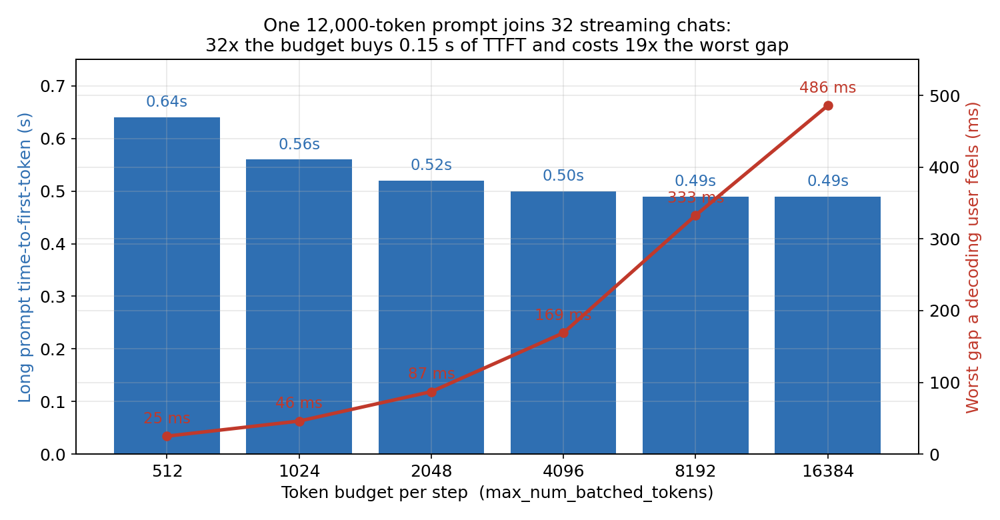
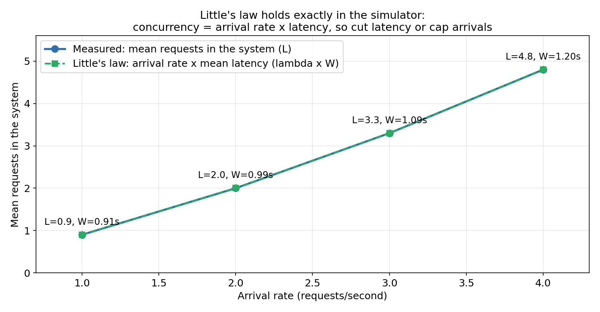
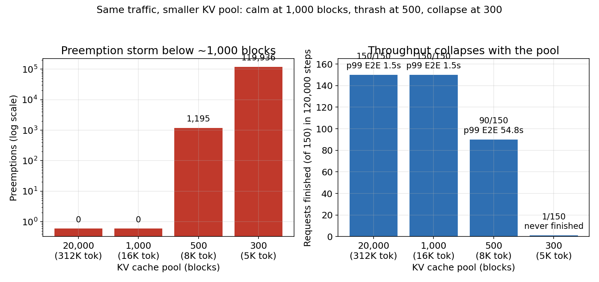
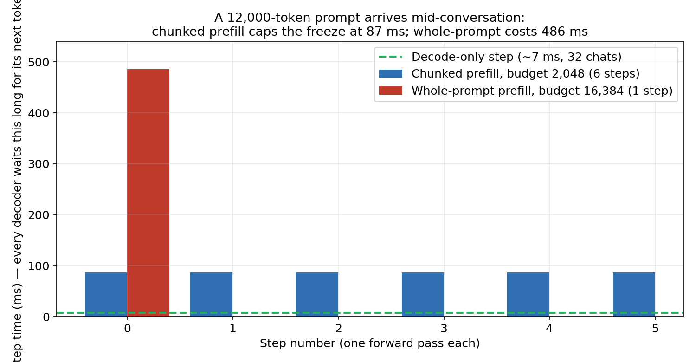

Thirty-two people are mid-conversation with your model, each getting a token every few milliseconds. A new user pastes a 12,000-token document and hits send. On most serving engines, that document freezes all thirty-two chats for half a second. On vLLM it doesn't — usually. The difference is not a faster GPU or a better kernel. It is a scheduler that makes exactly one decision per step: which requests get tokens, and how many.
That scheduler is the most consequential piece of code in vLLM's V1 engine, and the least understood. It has no phases, no queues full of clever heuristics, and no separate "prefill mode" or "decode mode." It has a budget, a rule for spending it, and a preemption policy for when the money runs out. This is GDE post #4 in the vLLM serving series: how the scheduler actually decides, what the knobs cost, and the three ways it breaks — with a simulator you can run to see each one.
The ELI5 version
Imagine a nightclub with one bouncer and a strict rule: at most 8,192 people can be on the dance floor at once. That number is the token budget — max_num_batched_tokens.
People already dancing get to stay, one song at a time — those are the decoding requests, and each one needs exactly one token per step. People waiting outside are prefill: each one arrives with a whole prompt to get through the door. The bouncer lets the dancers keep their spots first, then fills whatever floor space is left with newcomers — slicing a big group across several songs if it doesn't fit. That slicing is chunked prefill: it is not a feature bolted on, it is what a fixed budget does to a long prompt.
Two more rules. First, the club has a coat check with limited hooks — the KV cache. Every dancer's coat takes hooks in proportion to how long they've been dancing, and when the hooks run out, the bouncer throws the newest dancer out — preemption — and they have to re-queue from the start, coatless. Second, the bouncer normally works first-come-first-served, but the club can hand out VIP passes: priority scheduling lets one class of requests jump the queue.
The whole system is those three mechanisms — a budget, a coat check, and a queue order — plus one law of queuing theory that no scheduler can repeal.
How it works: one dictionary per step
In vLLM's V1 engine, the scheduler runs once per forward pass and produces a single dictionary: {request_id: num_tokens}. A request whose processed count is still inside its prompt is prefilling; one past it is decoding. The scheduler does not care which. Everything that used to be a named feature falls out of that dictionary.
Decodes claim first. Every running request that is decoding asks for one token, and it gets it before any prefill work is scheduled. Then the remaining budget goes to prompts, chunked to fit. A 12,000-token prompt under an 8,192-token budget is simply sliced across steps — no special mode, no flag.
The budget is a latency knob, not a throughput knob. A step takes as long as the tokens inside it. Our simulator (8B model on one H100: 5 ms fixed cost per forward pass plus 40 µs per token, the same calibration as the last post) shows the tradeoff exactly. Thirty-two decoders plus one 12,000-token prompt:

At a budget of 512, the long prompt's first token takes 0.64 s and the worst gap any decoder feels is 25 ms. At 16,384, the first token takes 0.49 s — 0.15 s faster — and the worst gap is 486 ms, nineteen times worse. The prompt's TTFT barely moves because prefill is compute-bound and the total math is fixed; the gap explodes because every decoder in the batch waits out the whole step. Doubling the budget past the point where prefill chunks dominate buys almost nothing on TTFT and costs everything on tail latency. The defaults encode this: SchedulerConfig defaults to 2,048 batched tokens, vllm serve raises it by GPU (2,048 / 8,192 / 16,384), and --performance-mode throughput doubles it — a setting whose name is a warning label, not a promise.
The queue is arithmetic. Little's law says the mean number of requests in the system equals the arrival rate times the mean latency: L = λW. It holds exactly in the simulator at every load we tried:

At 4 requests a second with ~1.2 s mean latency, 4.8 requests sit in the system on average — measured 4.8, predicted 4.8. The scheduler cannot beat this identity. When the queue grows, there are only two levers: cut latency (faster prefill, fewer preemptions) or stop admitting work (max_num_seqs, or backpressure upstream). Everything else is moving the queue from one place to another.
Admission has two gates. A waiting request joins the running set only if the sequence count allows it (max_num_seqs, default 128 in config) and the KV cache has room for its first chunk above the watermark — a fraction of blocks kept free when admitting, so running requests don't immediately starve. The watermark default is 0.0 in the config, and the practical value is small; its job is to keep a few percent of the pool in reserve so one admission doesn't trigger a preemption cascade on the next step.
Preemption is recompute, and it is brutal. When a running request cannot get its next KV block, V1 preempts the newest running request under FCFS (the lowest-priority one under the priority policy), frees its blocks, resets its computed-token count to zero, and puts it at the front of the waiting queue. There is no swap-to-host path anymore in V1 — recompute is the default, and the older swap path is gone. The cost is the whole request re-prefilled: prompt plus generated tokens so far, paid again as compute.
The state of the art: the scheduler is where the speedups hide
The most instructive change in vLLM 0.33.0 changed no kernel at all. In speculative decoding, draft models (DSpark, DFlash) were reserving token-budget slots they never used — a DSpark drafter with K=5 had each decode request charged 10 tokens instead of 6 — so leftover draft tokens kept splitting every new prefill into small chunks, most decode steps mixed prefill into the batch, and mixed batches can't take the full decode CUDA graph. PR #59468 stopped the drafters reserving slots they don't use. Same model, same hardware (DeepSeek-V4.1-Flash with the DSpark drafter, tensor-parallel 4 on one GB300, --max-num-batched-tokens 512): 1,373 → 3,390 output tokens per second, a 2.47× gain, inter-token latency p50 from 169 ms to 30 ms, TTFT p50 from 93.6 s to 30.0 s — with the acceptance length unchanged at 4.72 vs 4.73. The draft model didn't get better. The schedule did. When a serving stack is slow, check the batch composition before blaming the math.
The idea behind chunked prefill is older than vLLM's V1 engine. Sarathi (August 2023) showed that piggybacking decodes with chunked prefills fixes the interference, and Sarathi-Serve (2024) turned it into a full scheduler; DeepSpeed's FastGen (January 2024) described the same idea as Dynamic SplitFuse. V1's contribution was to delete the distinction: chunked prefill isn't a mode you enable, it's what a token budget does. The next step is already in flight: the layered prefill scheduler (PR #62690, RFC #62689, opened October 21, 2026) proposes prioritizing prefill chunks by layer, so short prompts don't wait behind long ones inside the same budget.
Why it breaks
The budget is the whole game. The burst experiment above is the entire story in one chart: the budget trades one user's TTFT against every other user's worst gap, and the exchange rate gets worse as the budget grows. The escape hatch is --long-prefill-token-threshold (off by default, with an adaptive variant): it caps how many tokens one long prompt can take in a step while other requests are running, so a single document can't eat the budget. If your p99 inter-token latency climbs without a traffic change, the budget and the long-prefill threshold are the first two numbers to check — before the model, before the GPU, before the kernel.
The preemption cliff is a cliff, not a slope. Shrink the KV pool and nothing degrades gracefully. Our simulation (150 requests, 3 per second, no long prompts) is calm at 1,000 blocks and dead at 300:

At 20,000 blocks and at 1,000 blocks (16K tokens): zero preemptions, p99 end-to-end latency 1.5 s, all 150 requests finish. At 500 blocks (8K tokens): 1,195 preemptions, 1.44 million tokens recomputed, p99 latency 54.8 s, and only 90 of 150 requests finish in 120,000 steps. At 300 blocks: 119,936 preemptions and 1 of 150 finishes — the recompute work itself keeps the pool full, so the system spends its GPU re-doing work it already did. That is why vLLM counts preemptions in Prometheus as total_cumulative_preemption_cnt: it is the first metric to check when p99 climbs without a traffic change, and a rising count means the pool is too small for the concurrency you're admitting, not that the model got slower. The fix is a bigger pool, fewer concurrent sequences, or shorter contexts — never a bigger token budget, which makes the steps longer and the preemptions more expensive.
Priority is a transfer, not a speedup. Under --scheduling-policy priority, requests carry a priority value (lower means earlier) and the queue orders by (priority, arrival_time). At 8 requests a second with 2,000-token median prompts — an overloaded server — the 10% of requests marked high priority wait 2.54 s for their first token instead of 7.60 s under pure FCFS, while regular requests wait 19.86 s instead of 7.60 s. Priority cuts one class's wait roughly 3× and more than doubles the other's. It also changes who gets preempted: under priority, the lowest-priority request goes first, so a high-priority request can evict low-priority work mid-flight. Use it for a genuinely tiered product (paying users over free tier, interactive over batch), never as a general latency fix — the total waiting in the system is set by Little's law, and priority just decides who holds it.
The freeze, measured. The Sarathi result in miniature: a 12,000-token prompt arriving mid-conversation takes 6 steps of ~87 ms under chunked prefill at budget 2,048, and 1 step of 486 ms as a whole prompt at budget 16,384:

A decode-only step with 32 chats is ~7 ms. The chunked run never lets a decoder wait more than 87 ms; the whole-prompt run makes every decoder wait 486 ms for one user. That 486 ms is a visible stutter in a chat UI — the kind of thing users report as "the model froze" when the model did nothing wrong.
The interview angle
"How does vLLM's V1 scheduler work?" The answer they want: one decision per step — a {request_id: num_tokens} dictionary under a fixed token budget. Decodes get one token each first, prefill chunks fill the rest, chunked prefill falls out of the budget, and there are no phases. Then the follow-ups: "What happens when the KV cache runs out?" — the newest running request is preempted under FCFS and recomputes from zero; a waiting request just waits. "When would you raise max_num_batched_tokens?" — when TTFT matters more than tail ITL and the workload is prefill-heavy, and never without watching p99 ITL, because the budget trades one user's first token against every decoder's worst gap. And the number to have ready: at 40 µs per token, an 8,192-token budget means a worst step of ~333 ms — which is why the default budget is 2,048 on most GPUs, not 16,384.
Takeaways
- vLLM's V1 scheduler makes one decision per step: a
{request_id: num_tokens}dictionary under a fixed token budget. Decodes claim one token each first; prefill chunks fill the rest. Chunked prefill is not a mode — it is what a budget does to a long prompt. - The budget trades TTFT against worst-case gap: 32× the budget (512 → 16,384) buys 0.15 s of TTFT and costs 19× the worst decoder gap (25 ms → 486 ms).
--long-prefill-token-thresholdcaps what one long prompt can take per step. - Little's law binds: mean requests in system = arrival rate × mean latency, exactly. Cut latency or cap admissions (
max_num_seqs, watermark); nothing else shrinks the queue. - Preemption is recompute-from-zero, and the pool size is a cliff: 1,000 blocks calm (0 preemptions, p99 1.5 s), 500 blocks thrashing (1,195 preemptions, p99 54.8 s, 90/150 finish), 300 blocks collapsed (1/150 finish). Watch
total_cumulative_preemption_cnt. - Priority scheduling transfers waiting, it doesn't remove it: high-priority TTFT 2.54 s vs 7.60 s FCFS, regular requests 19.86 s vs 7.60 s. Use it for tiers, not as a latency fix.
- vLLM 0.33's biggest free speedup was a scheduler accounting fix (PR #59468): 1,373 → 3,390 tok/s, ITL p50 169 → 30 ms, same model, same hardware, same kernels.
This is post #4 of the GDE vLLM serving series — next is speculative decoding in vLLM: EAGLE, MTP, and draft models, on Fri Nov 20. Follow along on dev.to/danielsamfdo for the next part.
Honesty note: all simulation numbers are computed in the companion notebook for an 8B model on one H100 at 40% MFU (5 ms + 40 µs/token per step) — a toy model, not vLLM on hardware; real step times depend on model, GPU, CUDA graphs, and prefix-cache hit rate. The qualitative results (budget trades TTFT against worst gap, Little's law binds, the preemption cliff, priority as a transfer) are the scheduler's mechanics. The 0.33 scheduler-fix figures are from PR #59468 as reported in the release notes (single run per side, DeepSeek-V4.1-Flash + DSpark, TP4 on GB300); the layered prefill scheduler (PR #62690) was opened Oct 21, 2026 and is not in 0.33. The KV=300 p99 figure is not cited because only 1 of 150 requests finished. No Meta content, per standing exclusion.